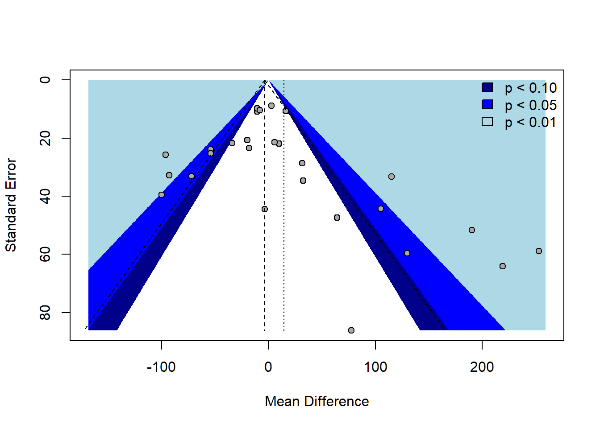
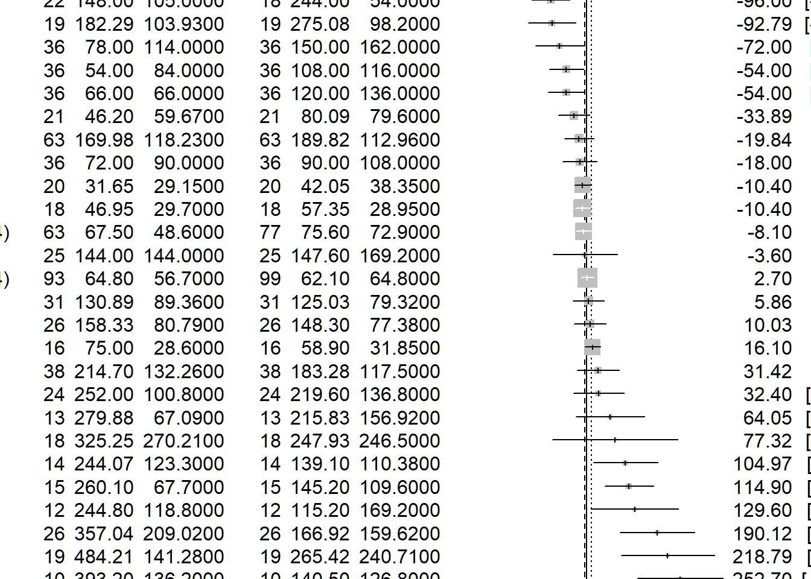
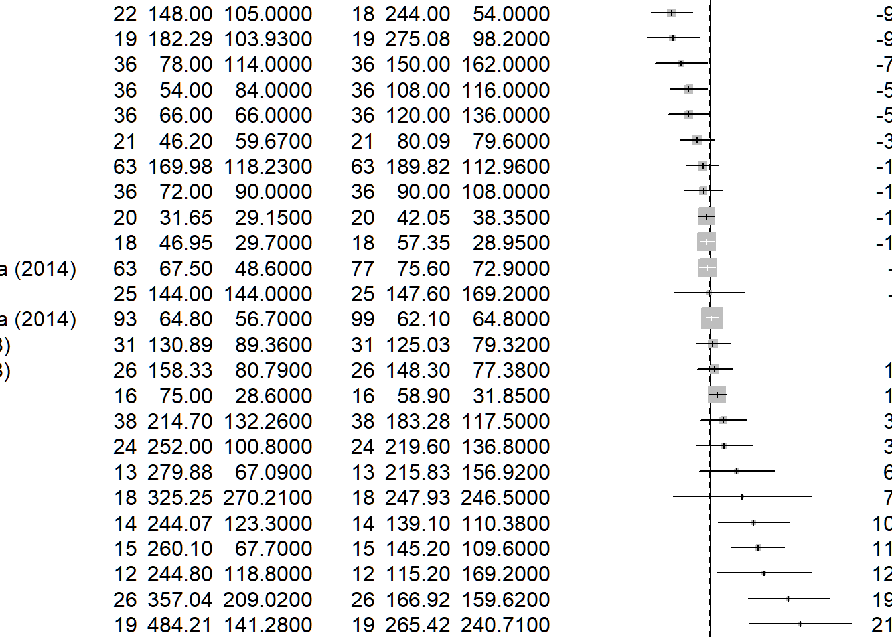

# A tibble: 6 × 28
Study Femal…¹ Male …² Age (…³ N_boys N_girls Mean_…⁴ SD_bo…⁵ Mean_…⁶ SD_gi…⁷
<chr> <dbl> <dbl> <dbl> <dbl> <dbl> <dbl> <dbl> <dbl> <dbl>
1 Alexan… 2 0 19.5 47 47 439. 166. 249. 161.
2 Arthur… 1 0 19 22 18 148 105 54 53
3 Berenb… 2 0 65.8 18 18 325. 270. 135. 202.
4 Berenb… 2 0 93.1 19 19 484. 141. 202. 168.
5 Doerin… 1 3 87 15 15 260. 67.7 98.4 101.
6 Idle e… 2 1 46 10 10 393. 136. 271. 140.
# … with 18 more variables: Mean_boys_play_female <dbl>,
# SD_boys_play_female <dbl>, Mean_girls_play_female <dbl>,
# SD_girls_play_female <dbl>, `Neutral toys` <dbl>, Year <dbl>,
# `Parent present` <dbl>, Setting <dbl>, Country <dbl>,
# `Case definition adequate` <chr>, `Representativeness of cases` <chr>,
# `Selection of controls` <chr>, `Parental opinion` <chr>,
# `Comparability of both groups` <chr>, `Ascertainment of behaviour` <chr>, …
tibble [27 × 28] (S3: tbl_df/tbl/data.frame)
$ Study : chr [1:27] "Alexander & Saenz (2012)" "Arthur (2014)" "Berenbaum & Hines (1992)" "Berenbaum & Snyder (1995)" ...
$ Female authors : num [1:27] 2 1 2 2 1 2 5 2 3 3 ...
$ Male authors : num [1:27] 0 0 0 0 3 1 1 0 3 3 ...
$ Age (months) : num [1:27] 19.5 19 65.8 93.1 87 ...
$ N_boys : num [1:27] 47 22 18 19 15 10 21 38 12 25 ...
$ N_girls : num [1:27] 47 18 18 19 15 10 21 38 12 25 ...
$ Mean_boys_play_male : num [1:27] 439 148 325 484 260 ...
$ SD_boys_play_male : num [1:27] 166.1 105 270.2 141.3 67.7 ...
$ Mean_girls_play_male : num [1:27] 248.6 54 135.1 202.5 98.4 ...
$ SD_girls_play_male : num [1:27] 161 53 202 168 101 ...
$ Mean_boys_play_female : num [1:27] 377.3 126 33.5 26.4 7.2 ...
$ SD_boys_play_female : num [1:27] 170.9 67 69.5 92 21.5 ...
$ Mean_girls_play_female : num [1:27] 539 244 248 265 145 ...
$ SD_girls_play_female : num [1:27] 214 54 246 241 110 ...
$ Neutral toys : num [1:27] 1 0 1 1 1 1 1 1 1 1 ...
$ Year : num [1:27] 2012 2014 1992 1995 1989 ...
$ Parent present : num [1:27] 3 2 2 2 1 3 2 1 3 3 ...
$ Setting : num [1:27] 2 2 2 1 2 3 2 1 2 2 ...
$ Country : num [1:27] 0.256 0.28 0.252 0.252 0.141 0.141 0.248 NA 0.228 0.228 ...
$ Case definition adequate : chr [1:27] "*" "*" "X" "*" ...
$ Representativeness of cases : chr [1:27] "*" "X" "*" "X" ...
$ Selection of controls : chr [1:27] "X" "X" "*" "*" ...
$ Parental opinion : chr [1:27] "X" "X" "*" "*" ...
$ Comparability of both groups : chr [1:27] "*" "**" "*" "*" ...
$ Ascertainment of behaviour : chr [1:27] "*" "*" "*" "*" ...
$ Same ascertainment method for both groups: chr [1:27] "*" "*" "*" "*" ...
$ Non‐response rate : chr [1:27] "X" "*" "X" "*" ...
$ NOS score : num [1:27] 5 6 6 7 6 8 7 6 7 7 ...ASSIGNMENT
- Import the data from the
data\metaanalysis_data.xlsxfile. The data come from the meta-analysis study: Todd et al., 2017 - Sex differences in children’s toy preferences: A systematic review, meta‐regression, and meta‐analysis
The study looks at various studies of children choosing what kind of toys they play with (stereotypically ‘boy-toys’ or stereotypically ‘girl-toys’). Mean times (in seconds) of playing are recorded, along with sample sizes and standard errors (for boys playing with each kind of toys and for girls playing with each kind of toys).
There’s also information about the studies (e.g. year) and a bit about quality.
Here’s authors’ descriptions to the data:
Neutral toys (1 = neutral toys included; 2 = neutral toys not included); Parent present (1 = absent; 2 = minimal interaction; 3 = moderate or full interaction); Setting = location of study (1 = home; 2 = laboratory; 3 = nursery); Country = gender inequality index, a measure of how gender egalitarian the country was at the time the study took place.
Note. Quality is assessed using Newcastle–Ottawa Quality Assessment Scale criteria adapted for this study. A star indicates that the study fulfilled this criterion; an X indicates that the study did not fulfil this criterion. Case definition adequate: clear justification for the gendered nature of a toy, for example, based on research. Representativeness of cases: recruitment of consecutive participants. Selection of controls: whether boys and girls were comparable in terms of social background. Parental opinion: whether parents’ views on gender were measured. Comparability of both groups: the toys were comparable (in size, shape, etc.) and if the boys and girls were comparable in age. Ascertainment of behaviour: Play behaviour was clearly defined. Same ascertainment method for both groups: The measurement of the outcome (time spent playing with toy) was clearly defined. Nonresponse rate: whether either nonuptake or dropout rates reported.
- Experiment using what you’ve learned:
- combine the effects
- create a funnel plot (what do you see?)
- check if methods / quality affect the results
- does author gender affect it?
Load data first
• Random effects = TRUE •
Number of studies combined: k = 27
Number of observations: o = 1610
MD 95%-CI z p-value
Common effect model -3.5717 [-10.7863; 3.6428] -0.97 0.3319
Random effects model 14.3050 [-15.5035; 44.1136] 0.94 0.3469
Quantifying heterogeneity:
tau^2 = 5085.6367 [3081.8461; 13848.4863]; tau = 71.3136 [55.5144; 117.6796]
I^2 = 78.7% [69.5%; 85.1%]; H = 2.16 [1.81; 2.59]
Test of heterogeneity:
Q d.f. p-value
121.78 26 < 0.0001
Details on meta-analytical method:
- Inverse variance method
- Restricted maximum-likelihood estimator for tau^2
- Q-Profile method for confidence interval of tau^2 and tauFunnel plot:

From funnel plot, we see that most of them are around medium standard errors and scatter around zero difference, which is true effect, and this plot is more or less symmetric, which demonstrates that publication bias is not present regarding this setting.

Output 1 shows us that most of the data points are in the center meaning that they are not that much far away from each other, as well as meaning that their standard errors are kind of small in most cases.
Check if methods affect results :
Mixed-Effects Model (k = 27; tau^2 estimator: REML)
tau^2 (estimated amount of residual heterogeneity): 4905.3662 (SE = 1731.3711)
tau (square root of estimated tau^2 value): 70.0383
I^2 (residual heterogeneity / unaccounted variability): 91.68%
H^2 (unaccounted variability / sampling variability): 12.02
R^2 (amount of heterogeneity accounted for): 3.54%
Test for Residual Heterogeneity:
QE(df = 24) = 115.1274, p-val < .0001
Test of Moderators (coefficients 2:3):
QM(df = 2) = 4.3555, p-val = 0.1133
Model Results:
estimate se zval pval ci.lb
intrcpt 50.2872 24.0145 2.0940 0.0363 3.2196
`Parental opinion`X -63.2263 30.2979 -2.0868 0.0369 -122.6091
`Representativeness of cases`X -11.1658 38.1802 -0.2925 0.7699 -85.9976
ci.ub
intrcpt 97.3548 *
`Parental opinion`X -3.8436 *
`Representativeness of cases`X 63.6660
---
Signif. codes: 0 '***' 0.001 '**' 0.01 '*' 0.05 '.' 0.1 ' ' 1Check if gender affects the results :
Mixed-Effects Model (k = 27; tau^2 estimator: REML)
tau^2 (estimated amount of residual heterogeneity): 5046.4353 (SE = 1768.2411)
tau (square root of estimated tau^2 value): 71.0383
I^2 (residual heterogeneity / unaccounted variability): 92.35%
H^2 (unaccounted variability / sampling variability): 13.08
R^2 (amount of heterogeneity accounted for): 0.77%
Test for Residual Heterogeneity:
QE(df = 24) = 115.3810, p-val < .0001
Test of Moderators (coefficients 2:3):
QM(df = 2) = 2.4950, p-val = 0.2872
Model Results:
estimate se zval pval ci.lb ci.ub
intrcpt 70.3000 45.6474 1.5401 0.1235 -19.1672 159.7672
`Female authors` -25.0774 16.4546 -1.5240 0.1275 -57.3278 7.1730
`Male authors` 12.3914 14.8996 0.8317 0.4056 -16.8113 41.5941
---
Signif. codes: 0 '***' 0.001 '**' 0.01 '*' 0.05 '.' 0.1 ' ' 1• Fixed effects = TRUE •
Number of studies combined: k = 27
Number of observations: o = 1610
MD 95%-CI z p-value
Common effect model -3.5717 [-10.7863; 3.6428] -0.97 0.3319
Quantifying heterogeneity:
tau^2 = 5085.6367 [3081.8461; 13848.4863]; tau = 71.3136 [55.5144; 117.6796]
I^2 = 78.7% [69.5%; 85.1%]; H = 2.16 [1.81; 2.59]
Test of heterogeneity:
Q d.f. p-value
121.78 26 < 0.0001
Details on meta-analytical method:
- Inverse variance method
- Restricted maximum-likelihood estimator for tau^2
- Q-Profile method for confidence interval of tau^2 and tauFunnel plot:

Check if methods affect results :
Mixed-Effects Model (k = 27; tau^2 estimator: REML)
tau^2 (estimated amount of residual heterogeneity): 4905.3662 (SE = 1731.3711)
tau (square root of estimated tau^2 value): 70.0383
I^2 (residual heterogeneity / unaccounted variability): 91.68%
H^2 (unaccounted variability / sampling variability): 12.02
R^2 (amount of heterogeneity accounted for): 3.54%
Test for Residual Heterogeneity:
QE(df = 24) = 115.1274, p-val < .0001
Test of Moderators (coefficients 2:3):
QM(df = 2) = 4.3555, p-val = 0.1133
Model Results:
estimate se zval pval ci.lb
intrcpt 50.2872 24.0145 2.0940 0.0363 3.2196
`Parental opinion`X -63.2263 30.2979 -2.0868 0.0369 -122.6091
`Representativeness of cases`X -11.1658 38.1802 -0.2925 0.7699 -85.9976
ci.ub
intrcpt 97.3548 *
`Parental opinion`X -3.8436 *
`Representativeness of cases`X 63.6660
---
Signif. codes: 0 '***' 0.001 '**' 0.01 '*' 0.05 '.' 0.1 ' ' 1Check if gender affects the results :
Mixed-Effects Model (k = 27; tau^2 estimator: REML)
tau^2 (estimated amount of residual heterogeneity): 5046.4353 (SE = 1768.2411)
tau (square root of estimated tau^2 value): 71.0383
I^2 (residual heterogeneity / unaccounted variability): 92.35%
H^2 (unaccounted variability / sampling variability): 13.08
R^2 (amount of heterogeneity accounted for): 0.77%
Test for Residual Heterogeneity:
QE(df = 24) = 115.3810, p-val < .0001
Test of Moderators (coefficients 2:3):
QM(df = 2) = 2.4950, p-val = 0.2872
Model Results:
estimate se zval pval ci.lb ci.ub
intrcpt 70.3000 45.6474 1.5401 0.1235 -19.1672 159.7672
`Female authors` -25.0774 16.4546 -1.5240 0.1275 -57.3278 7.1730
`Male authors` 12.3914 14.8996 0.8317 0.4056 -16.8113 41.5941
---
Signif. codes: 0 '***' 0.001 '**' 0.01 '*' 0.05 '.' 0.1 ' ' 1I am not sure what youy means by methods, but if it means to use either random effects or fixed then it means that the results would not change I also tried implementing metagen however because I did not understand with what method were the variables(columns) selected, so I am sorry if I conducted it wrong :
Fixed Effects
Number of studies combined: k = 27
95%-CI z p-value
Common effect model 2.2010 [-29.2881; 33.6901] 0.14 0.8910
Random effects model 2.2010 [-29.2881; 33.6901] 0.14 0.8910
Quantifying heterogeneity:
tau^2 = 0; tau = 0; I^2 = 0.0% [0.0%; 42.5%]; H = 1.00 [1.00; 1.32]
Test of heterogeneity:
Q d.f. p-value
0.00 26 1.0000
Details on meta-analytical method:
- Inverse variance method
- Restricted maximum-likelihood estimator for tau^2Random effects
Number of studies combined: k = 27
95%-CI z p-value
Common effect model 2.2010 [-29.2881; 33.6901] 0.14 0.8910
Quantifying heterogeneity:
tau^2 = 0; tau = 0; I^2 = 0.0% [0.0%; 42.5%]; H = 1.00 [1.00; 1.32]
Test of heterogeneity:
Q d.f. p-value
0.00 26 1.0000
Details on meta-analytical method:
- Inverse variance method
- Restricted maximum-likelihood estimator for tau^2Again I am not sure if it is correct way but from results we can see that method(fixed/random) does not have effect on results.